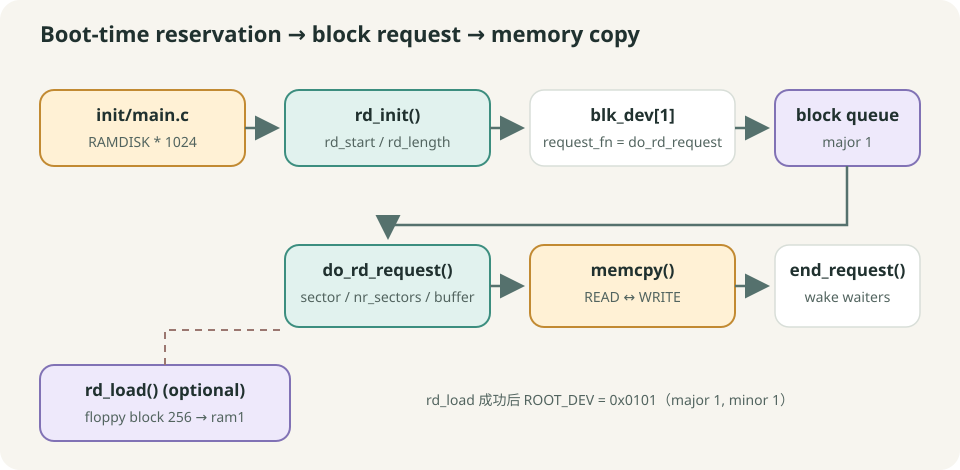
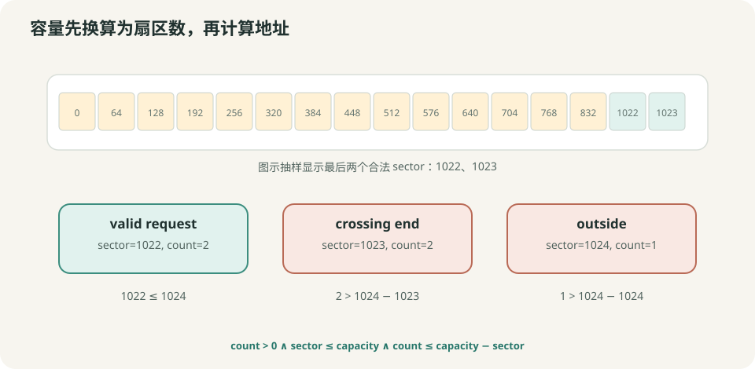
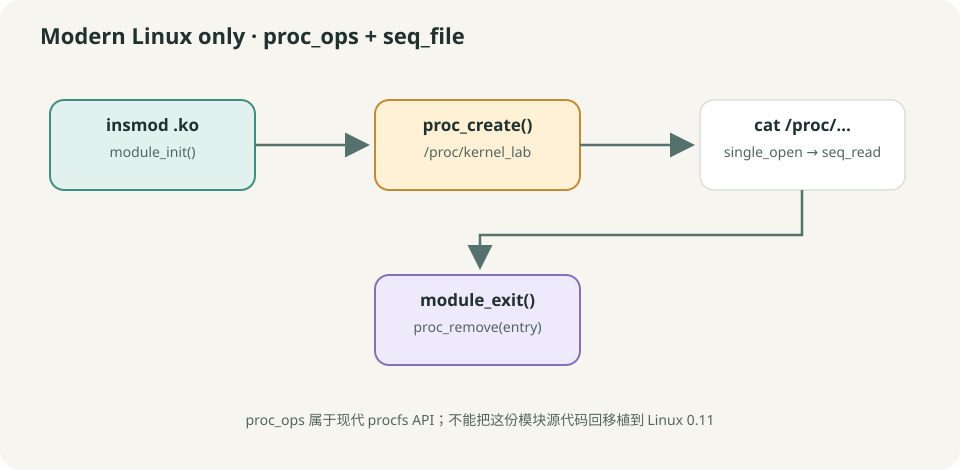
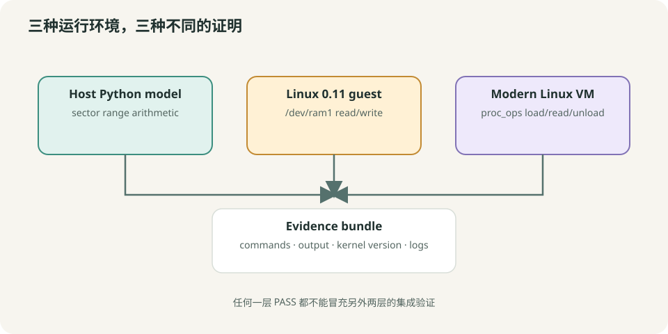

综合项目：审计并硬化 Linux 0.11 RAM Disk，迁移到现代 procfs
以 Linux 0.11 原生 kernel/blk_drv/ramdisk.c 为基线，追踪启动预留、major/minor、请求扇区和 rd_load；实现溢出安全的边界检查，添加用户态读写自测与主机端参考测试，并提供现代 proc_ops 模块迁移实验。
RTFSC Capstone · RAM Disk + procfs项目目标：不要重复造一个 1991 年已经存在的 RAM Disk
本章把源码阅读变成一个可审计的内核工程项目。目标不是从零编写一个现代 block driver，而是准确理解 Linux 0.11 已有的 kernel/blk_drv/ramdisk.c，为其请求范围检查补上更稳健的整数边界判断，再用用户态读写测试验证设备接口。最后提供一个独立的现代 procfs 模块作为可选迁移练习。
这个边界必须先说清楚：0.11 的 RAM Disk 不是现代 kmalloc(GFP_KERNEL) 分配一块内存后注册 gendisk 的写法。它在启动阶段预留一段连续内存，把 major 1 的请求函数指向 do_rd_request()，并通过 memcpy() 在内存和请求缓冲区之间搬运数据。

先读真实源码：ramdisk.c 已经包含驱动的三个核心函数
v0.11 的 kernel/blk_drv/ramdisk.c 定义了三个关键部分：全局 rd_start/rd_length 描述内存盘区域；do_rd_request() 从块请求队列取出请求并按扇区偏移复制；rd_init() 设置 blk_dev[1].request_fn、初始化内存并返回需要预留的字节数；rd_load() 则是可选的启动镜像加载器。
#define MAJOR_NR 1
#include "blk.h"
char *rd_start;
int rd_length = 0;
void do_rd_request(void)
{
int len;
char *addr;
INIT_REQUEST;
addr = rd_start + (CURRENT->sector << 9);
len = CURRENT->nr_sectors << 9;
if ((MINOR(CURRENT->dev) != 1) ||
(addr + len > rd_start + rd_length)) {
end_request(0);
goto repeat;
}
if (CURRENT->cmd == WRITE)
memcpy(addr, CURRENT->buffer, len);
else if (CURRENT->cmd == READ)
memcpy(CURRENT->buffer, addr, len);
else
panic("unknown ramdisk-command");
end_request(1);
goto repeat;
}注意真实请求字段：sector 是 512 字节扇区编号，nr_sectors 是扇区数量，buffer 是数据指针，cmd 是 READ/WRITE。这里不是 CURRENT->block，也不应把 CURRENT->bh->b_data 当成唯一数据地址。
kernel/blk_drv/blk.h 特别说明：paging request 的 bh 可以是 NULL，等待完成用 waiting；因此驱动应该使用 CURRENT->buffer。原版 end_request() 成功路径会检查 bh 是否存在，但失败日志仍会读取 CURRENT->bh->b_blocknr，这是扩展错误路径时必须留意的历史边界。
rd_init：RAM Disk 内存来自启动时预留，不来自运行时 kmalloc
根目录 Makefile 有 RAMDISK = #-DRAMDISK=512 选项。启用后，init/main.c 在 mem_init() 之前调用 rd_init(main_memory_start, RAMDISK*1024)，并把返回值加到 main_memory_start。因此 RAM Disk 所占内存不会再被普通页分配器当作可用 RAM 分配。
main_memory_start = buffer_memory_end;
#ifdef RAMDISK
main_memory_start += rd_init(main_memory_start, RAMDISK*1024);
#endif
mem_init(main_memory_start, memory_end);RAMDISK=512 按这段调用传入 512×1024 字节，也就是 512 个 1KiB 文件系统块（512KiB）。rd_init() 把 rd_start 指向这段物理内存的内核可访问地址、记录 rd_length、将内容清零并注册 major 1 的 request handler。这里没有运行时 kmalloc、没有现代 alloc_disk() 或 gendisk。
同时，v0.11 根目录 Makefile 把可用物理内存上限钳在 16MiB；RAM Disk 会从可供 mem_init() 管理的区域中扣除。若把 RAMDISK 配得过大，会直接挤压内核普通可用内存。
rd_load：从软盘偏移 256 个 1KiB 块加载根文件系统
rd_load() 的注释说明了它的启动约定：原始 root device 先设置为 floppy；当软盘上的 RAM disk 镜像存在且大小合适时，再将 root device 切换到 RAM Disk。函数从 block 256 开始寻找 MINIX superblock，检查 SUPER_MAGIC，计算镜像需要的块数，并确认没有超过 rd_length。
确认通过后，它逐个读入软盘块到 rd_start，最后将 ROOT_DEV=0x0101。这意味着 major=1、minor=1。kernel/blk_drv/blk.h 中 major 1 是 ramdisk；驱动又明确拒绝 MINOR != 1。因此用于访问该设备的节点是 /dev/ram1（block major 1 minor 1），不是常见误写的 /dev/ram0（minor 0）。
源码：rd_init()/rd_load()、init/main.c、sys_setup() 调用 rd_load()。
扇区单位与边界：先验证整数范围，再计算指针
原始实现先做 addr = rd_start + (sector << 9) 和 len = nr_sectors << 9，再检查 addr + len 是否越过 rd_start + rd_length。这个写法把安全性寄托在指针加法之后；如果输入范围异常，偏移或长度的整数运算可能先溢出，指针比较就不能作为可靠的首要边界验证。
更稳健的方式是先把 RAM Disk 容量换算为 512B sectors，然后用减法形式检查请求：sector <= capacity 且 nr_sectors <= capacity - sector。这样避免了直接计算 sector + nr_sectors 时的加法溢出；只有验证通过后，才计算地址和字节长度。

unsigned long capacity;
unsigned long sector;
unsigned long count;
capacity = (unsigned long)rd_length >> 9;
sector = CURRENT->sector;
count = CURRENT->nr_sectors;
if (MINOR(CURRENT->dev) != 1 ||
!count ||
sector > capacity ||
count > capacity - sector) {
end_request(0);
goto repeat;
}
addr = rd_start + (sector << 9);
len = count << 9;这个片段只展示安全范围检查的核心替换点；真实补丁还需要处理 end_request(0) 对 bh == NULL 的错误日志边界。由于 v0.11 的通用 end_request() 在失败时无条件打印 CURRENT->bh->b_blocknr，如果你要让可能没有 buffer_head 的 paging request 也走失败分支，应在 blk.h 中改为先判断 bh 是否存在，否则打印 sector。不要只在 ramdisk.c 里加检查，就宣称通用块层错误路径也已经安全。
完整硬化补丁：范围检查 + NULL bh 错误日志
补丁分两处。第一处在 ramdisk.c 中把“先算指针、再比较指针”的顺序改成“先校验 sector/count，再算指针”；第二处在 blk.h 的 end_request() 错误日志中兼容 bh == NULL。这两处解决的是不同问题：前者保护设备容量边界，后者保护通用请求失败时的诊断路径。
if (!uptodate) {
printk(DEVICE_NAME " I/O error\n\r");
if (CURRENT->bh)
printk("dev %04x, block %d\n\r",
CURRENT->dev, CURRENT->bh->b_blocknr);
else
printk("dev %04x, sector %lu\n\r",
CURRENT->dev, CURRENT->sector);
}在修改之前先保存原始文件，应用补丁后检查两个改动都已进入正确文件。不要为了“让错误测试通过”把 end_request(0) 改成成功；失败请求必须将 buffer 标记为 not-uptodate 并唤醒等待者。
用户态读写自测：写入模式、读回并逐字节比较
设备节点创建为 block major 1 minor 1。若在宿主机挂载的 rootfs 目录中准备节点，可用 mknod /path/to/rootfs/dev/ram1 b 1 1；若在 guest 中创建，则确认该发行根文件系统包含 mknod 工具。测试程序对 /dev/ram1 写入 1KiB 的确定性模式，再 seek 回开头读回并比较，验证 READ/WRITE 两个分支和数据偏移。
#include <fcntl.h>
#include <stdio.h>
#include <unistd.h>
#define TEST_BYTES 1024
int main(void)
{
int fd, i;
unsigned char written[TEST_BYTES];
unsigned char readback[TEST_BYTES];
for (i = 0; i < TEST_BYTES; i++)
written[i] = (i * 37 + 11) & 0xff;
fd = open("/dev/ram1", O_RDWR, 0);
if (fd < 0) {
printf("open /dev/ram1 failed\n");
return 1;
}
if (lseek(fd, 0L, 0) < 0 ||
write(fd, written, TEST_BYTES) != TEST_BYTES ||
lseek(fd, 0L, 0) < 0 ||
read(fd, readback, TEST_BYTES) != TEST_BYTES) {
printf("ramdisk I/O failed\n");
close(fd);
return 2;
}
for (i = 0; i < TEST_BYTES; i++) {
if (written[i] != readback[i]) {
printf("mismatch at %d\n", i);
close(fd);
return 3;
}
}
close(fd);
printf("ramdisk read/write PASS\n");
return 0;
}把该程序用与 0.11 用户空间兼容的 i386 a.out 工具链构建为 ZMAGIC，再放入 guest rootfs。0.11 的 fs/exec.c 不接受现代 GCC 默认 ELF 文件。若你只在现代主机上用本机 gcc 编译并运行了这个源文件，那只能证明 host 程序可运行，不等于 0.11 guest 可装载它。
主机端边界模型：验证最后一扇区、越界和减法检查
历史内核无法在现代 CI 中直接编译/启动时，可以先对范围判定写一个纯 Python 的参考模型。它不冒充内核集成测试，但能验证算术边界：512KiB 对应 1024 个扇区；从 sector 1022 读取 2 个扇区刚好结束；从 sector 1023 读取 2 个扇区越界；sector 大于 capacity、零扇区请求均拒绝。
SECTOR_SIZE = 512
def request_fits(length_bytes, sector, count):
capacity = length_bytes // SECTOR_SIZE
return (
count > 0
and sector <= capacity
and count <= capacity - sector
)
def test_last_1k_block_fits():
assert request_fits(512 * 1024, 1022, 2)
def test_request_crossing_end_fails():
assert not request_fits(512 * 1024, 1023, 2)
def test_request_starting_at_end_fails():
assert not request_fits(512 * 1024, 1024, 1)
def test_zero_count_fails():
assert not request_fits(512 * 1024, 10, 0)
def test_far_out_of_range_fails():
assert not request_fits(512 * 1024, 0xffffffff, 1)在仓库根目录运行 python3 -m unittest discover -s tests -v。该测试覆盖的是边界算术参考模型；guest 端的 ramdisk_selftest 才验证驱动请求路径。两者都通过仍不等于旧工具链构建与 QEMU 启动已经完成，除非你实际运行并保留了相应日志。
可选现代迁移实验：用 proc_ops 建立只读 /proc 入口
procfs 并不是 Linux 0.11 的现成接口。v0.99 的 fs/filesystems.c 已经能看到 CONFIG_PROC_FS 与 proc_read_super 的注册项；而这里的练习则是现代 Linux 的 out-of-tree module，使用 proc_ops、seq_file、proc_create() 和 proc_remove() 创建只读 /proc/kernel_lab。

#include <linux/init.h>
#include <linux/module.h>
#include <linux/proc_fs.h>
#include <linux/seq_file.h>
#include <linux/sched.h>
static struct proc_dir_entry *entry;
static int lab_show(struct seq_file *m, void *v)
{
seq_printf(m, "name: kernel-field-guide\n");
seq_printf(m, "pid: %d\n", current->pid);
seq_printf(m, "comm: %s\n", current->comm);
return 0;
}
static int lab_open(struct inode *inode, struct file *file)
{
return single_open(file, lab_show, NULL);
}
static const struct proc_ops lab_ops = {
.proc_open = lab_open,
.proc_read = seq_read,
.proc_lseek = seq_lseek,
.proc_release = single_release,
};
static int __init lab_init(void)
{
entry = proc_create("kernel_lab", 0444, NULL, &lab_ops);
if (!entry)
return -ENOMEM;
pr_info("kernel_lab: /proc/kernel_lab created\n");
return 0;
}
static void __exit lab_exit(void)
{
proc_remove(entry);
pr_info("kernel_lab: removed\n");
}
module_init(lab_init);
module_exit(lab_exit);
MODULE_LICENSE("GPL");# Kbuild
obj-m := kernel_lab_proc.o
# Build against the running kernel's configured build tree
make -C /lib/modules/$(uname -r)/build M=$PWD modules
sudo insmod kernel_lab_proc.ko
cat /proc/kernel_lab
sudo rmmod kernel_lab_proc
test ! -e /proc/kernel_lab && echo removed这个示例使用 Linux 5.6+ 的 proc_ops API；具体接口应以目标内核版本的头文件为准。外部模块构建方式见 Kbuild External Modules。只在可回滚的测试 VM 中加载模块；模块与内核共享特权，不是沙箱。
验收矩阵：把静态检查、guest 测试和现代模块测试分开

| 层次 | 操作 | 通过条件 | 不能证明什么 |
|---|---|---|---|
| Host model | unittest 边界用例 | 最后一扇区通过，越界/零长度拒绝 | 不证明内核 C 补丁编译成功 |
| 0.11 guest | ramdisk_selftest | 写 1KiB 后读回字节完全一致 | 不证明 swap-style NULL bh 请求路径 |
| 0.11 boundary | 最后有效块 / 下一块 | 有效请求成功，越界请求报告 I/O error，不破坏相邻内存 | 不证明所有硬件/工具链组合 |
| Modern module | insmod → cat → rmmod | /proc entry 创建、可读、卸载后消失 | 不证明 0.11 procfs API 兼容 |
| Repository CI | HTML/SVG/static/browser | 链接、页面、图示和响应式验收通过 | 不等于 QEMU 启动或内核镜像实测 |
故障定位顺序：先核对 RAMDISK 是否编译启用和内存容量；再核对设备节点是否是 b 1 1；接着检查 sector/nr_sectors 单位是否按 512B 计算；最后检查 request_fn 是否注册、rootfs 镜像是否从 block 256 起始并通过 MINIX superblock 校验。
为什么不能创建 /dev/ram0 b 1 0？（展开核对）
0.11 ramdisk.c 明确要求 MINOR(CURRENT->dev)==1，rd_load 成功后也把 ROOT_DEV 设置为 0x0101，即 major 1 minor 1。
为什么不能用现代 kmalloc/GFP_KERNEL 写 0.11 RAM Disk？（展开核对）
因为 0.11 的驱动在启动阶段由 rd_init() 预留连续内存，并从 main_memory_start 扣除；现代 kmalloc/GFP_KERNEL 和 gendisk API 不属于这个版本。
最终交付物与源码阅读复盘
labs/28/ramdisk_range_check.diff：0.11 请求边界与通用错误日志的补丁。labs/28/ramdisk_selftest.c：guest 用户态写入/读回测试。tests/test_ramdisk_bounds.py：主机端纯算术边界测试。labs/28/kernel_lab_proc.c、Kbuild、Makefile：现代 procfs 模块可选实验。docs/evidence/28.json：逐项标注源码版本、证据链接和验收层级。
至此课程形成一条完整路径：从 0.11 启动、内存、调度、文件系统和设备驱动，走到早期 Linux 版本演进，再把历史机制映射到现代 Linux 的页分配、调度、模块与 BPF。最重要的能力不是记住某个 API，而是能够从一个真实请求出发，沿着状态、数据结构和错误分支找到源代码证据，并明确实验究竟证明了什么。